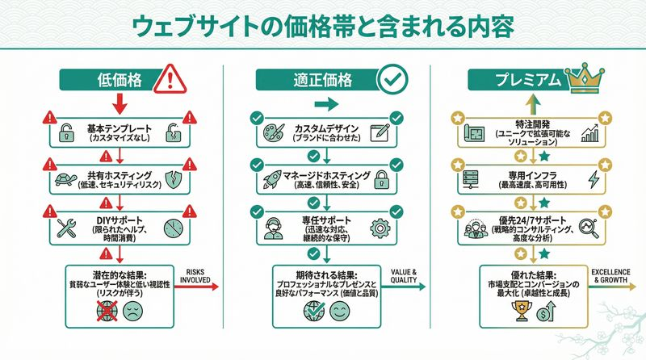

「ホームページ制作 埼玉 格安」で検索すると、5万円、3万円、中には無料という広告まで出てきます。でも、本当にそれで大丈夫でしょうか？
埼玉県戸田市でWeb制作を行っている株式会社ミアキスの代表として、今まで数多くの「格安サイトで失敗した企業」からの相談を受けてきました。正直に言うと、格安には格安なりの理由があるんです。
この記事では、格安Web制作の裏側と、後悔しないための適正価格の見極め方を、実際の事例をもとに本音で解説します。
格安Web制作で本当にあった失敗事例
まず、実際にあった相談事例をご紹介します。埼玉県内のある製造業の社長さんから、こんな電話がかかってきました。
これが格安Web制作の典型的なパターンです。「とにかく安く作る」ことだけが目的になってしまい、肝心の「何のためにホームページを作るのか」という部分が完全に抜け落ちているんです。
格安サイトの3つの共通点
今まで見てきた格安サイトには、こんな共通点がありました。
- テンプレートの使い回し：デザインが他社と全く同じで、差別化ができない
- SEO対策ゼロ：検索エンジンに見つけてもらえず、アクセスがほとんどない
- スマホ非対応：今どきスマホで見にくいサイトでは、すぐに離脱される
- サポートなし：更新したくても連絡が取れない、追加料金が高額
- 権利関係が不明：自社のドメインではなく、制作会社のサーバーに依存している
特に最後の「権利関係」は深刻です。ある戸田市の飲食店さんは、格安業者が突然廃業してしまい、ホームページごと消えてしまったというケースもありました。
なぜ格安でホームページが作れるのか？
そもそも、なぜこんなに安く作れるのでしょうか？種明かしをすると、こういうカラクリがあります。
1. テンプレートの大量生産方式
WordPressの無料テーマを使って、会社名と写真だけを入れ替える。これなら1時間もあれば完成します。でも、それってホームページ「制作」と言えるでしょうか？
ミアキスでは、お客様の事業内容や競合調査、ターゲット分析から始めるので、初回ヒアリングだけでも2〜3時間かけます。そこまでやらないと、「成果の出るホームページ」にはならないんです。
2. サポートを削ってコストカット
格安プランには、納品後のサポートが一切含まれていないことがほとんどです。
- 更新したい → 別途有料（1回3万円〜）
- 問い合わせしたい → 返信が遅い、または返ってこない
- トラブル対応 → そもそも対応してくれない
結局、安く作っても、運用コストで結局高くつくパターンが非常に多いんです。
3. サブスクリプション型の罠
「初期費用0円！月額9,800円だけ」という広告、見たことありませんか？これ、よく見ると3年契約必須だったりします。
計算してみましょう。9,800円 × 36ヶ月 = 352,800円。さらに、解約すると違約金が発生したり、ホームページのデータがもらえなかったりするケースも。
実際、埼玉県内のある美容室さんは、このタイプの契約で5年間で60万円以上支払っていたそうです。それなら最初からしっかりしたサイトを作った方が、よっぽどコスパが良かったと後悔されていました。
適正価格って、いくらなの？
では、適正価格とは一体いくらなのか？埼玉県内の相場観と、ミアキスの考え方をお伝えします。
埼玉県内のホームページ制作費用の相場
| 価格帯 | 内容 | 向いている企業 |
|---|---|---|
| 10万円未満 | テンプレート、サポートなし | とりあえず作りたい個人事業主 |
| 30〜50万円 | オリジナルデザイン、基本的なSEO対策 | 中小企業の名刺代わりサイト |
| 50〜100万円 | しっかりした戦略設計、集客機能 | 成果を求める企業 |
| 100万円以上 | 複雑な機能、システム連携 | ECサイト、大規模サイト |
ミアキスでは、埼玉県の中小企業向けに30〜80万円の価格帯でご提案することが多いです。この価格帯なら、しっかりとしたヒアリング、オリジナルデザイン、SEO対策、そして納品後のサポートまで含められます。
価格の中身を知ることが大切
大事なのは、「何にいくらかかっているのか」を明確にすることです。見積もりを取るときは、こんな項目をチェックしてください。
- ヒアリング・企画費用
- デザイン費用（オリジナルかテンプレートか）
- コーディング費用
- コンテンツ制作費用（文章・写真）
- SEO対策費用
- 納品後サポート費用
これらが「一式」とだけ書かれている見積もりは要注意。何が含まれているのか、必ず確認しましょう。詳しくはWeb制作の見積もりで確認すべき5つのポイントの記事も参考にしてください。
後悔しないWeb制作会社の選び方
埼玉県内にもたくさんのWeb制作会社があります。格安に惑わされず、本当に良いパートナーを選ぶためのポイントをお伝えします。
1. 実績と事例を確認する
ホームページを見て、制作実績がちゃんと載っているかをチェック。できれば同じ業種の実績があると安心です。
ミアキスでも、埼玉県内の製造業、士業、飲食店など、様々な業種の実績を制作実績ページで公開しています。
2. 担当者の対応を見る
初回相談の時点で、こちらの話を丁寧に聞いてくれるかが重要。いきなり「これがおすすめです」と押し売りしてくる会社は避けた方が無難です。
戸田市という地元で仕事をしていると、「顔が見える関係」がとても大事だと実感します。何かあったときにすぐ相談できる、そんな距離感の制作会社を選ぶことをおすすめします。
3. 保守・運用体制を確認する
ホームページは作って終わりではありません。納品後の運用サポートがどこまで含まれているか、必ず確認してください。
ミアキスでは月額1万円〜の保守運用プランをご用意していますが、これも「何をしてくれるのか」を明確にしています。詳しくはホームページ保守費用の相場と内訳の記事をご覧ください。
ミアキスが考える「適正価格」の定義
最後に、私たちミアキスが考える「適正価格」についてお話しします。
適正価格とは、「お客様が求める成果に対して、必要十分な品質とサポートを提供できる価格」だと考えています。
例えば、名刺代わりのホームページで良いなら30万円程度、集客や採用に力を入れたいなら50〜80万円、ECサイトなら100万円以上が目安です。
大切なのは、「安い」ではなく「費用対効果が高い」こと。格安で作っても、誰も見てくれないサイトでは意味がありませんよね。
埼玉県という地域で、地元企業の成長をWeb制作で支えたい。そんな思いで、ミアキスは適正価格での誠実な提案を心がけています。
まとめ：格安に飛びつく前に、一度立ち止まって考えよう
格安Web制作は魅力的に見えますが、「安物買いの銭失い」になるリスクが高いのも事実です。
- 格安サイトはテンプレート使い回しでサポートなし
- サブスク型は長期契約で結局高額になる
- 埼玉県の適正価格は30〜80万円が目安
- 見積もりの内訳を必ず確認する
- 地元の顔が見える制作会社を選ぶと安心
ホームページは会社の顔です。格安に飛びつく前に、「何のために作るのか」「どんな成果を求めるのか」をしっかり考えてから、信頼できる制作会社を選んでください。
埼玉県戸田市の株式会社ミアキスでは、無料相談を実施しています。「この見積もり、適正なのかな？」と不安に思ったら、ぜひお気軽にご相談ください。